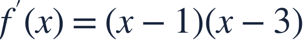
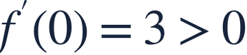
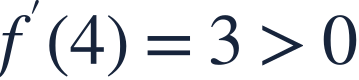
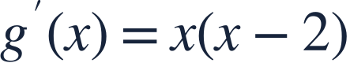

Increasing and decreasing
증가와 감소

The sign of f′ tells whether the function rises or falls on an interval.
도함수의 부호로 구간에서 함수의 증가와 감소를 판단합니다.

The sign of f′ tells whether the function rises or falls on an interval.
도함수의 부호로 구간에서 함수의 증가와 감소를 판단합니다.
Split the real line wherever the derivative can change sign.
도함수의 부호가 바뀔 수 있는 점에서 수직선을 나누세요.
| interval | sign f′ |
|---|---|
| x<1 | + |
| 1<x<3 | − |
| x>3 | + |
Test one input in each interval because the derivative has no other zeros or breaks.
다른 영점이나 단절이 없으므로 각 구간에서 한 입력으로 부호를 확인합니다.

Two negative factors make a positive product on the left.
왼쪽에서는 두 음수의 곱이 양수입니다.
Between the zeros, the factors have opposite signs.
두 영점 사이에서는 인수의 부호가 반대입니다.

So f increases outside [1,3] and decreases between 1 and 3.
따라서 1보다 작거나 3보다 큰 구간에서는 증가하고 그 사이에서는 감소합니다.
The sign of f itself tells height, not whether the graph is increasing.
f 자체의 부호는 높이를 나타내며 증가 여부를 결정하지 않습니다.

Where is g decreasing?
g는 어느 구간에서 감소하나요?